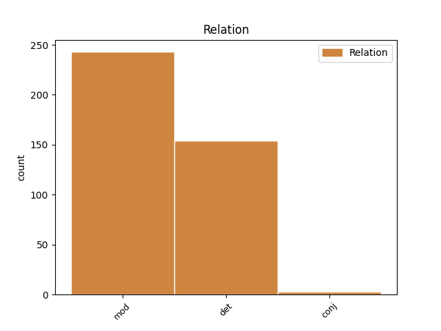
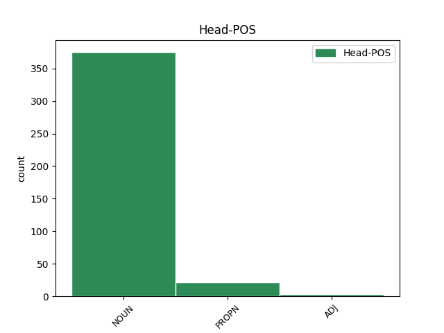
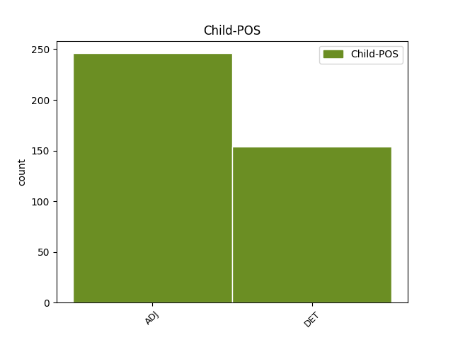

Distribution of features within this leaf



Agreement Rules sorted by frequency.
- When the dependent token is the modifer(mod) of the head token, and the dependent token is ADJ.
1 I _ _ _ _ 0 _ _ _
2 mí _ _ _ _ 0 _ _ _
3 Mheán _ _ _ _ 0 _ _ _
4 Fómhair _ _ _ _ 0 _ _ _
5 na _ _ _ _ 0 _ _ _
6 bliana bliain NOUN Noun Case=Gen|Definite=Def|Gender=Fem|Number=Sing 0 _ _ _
7 céanna céanna ADJ Adj Case=Gen|Gender=Fem|Number=Sing 6 mod _ _
8 sin _ _ _ _ 0 _ _ _
9 , _ _ _ _ 0 _ _ _
10 thug _ _ _ _ 0 _ _ _
11 Pól _ _ _ _ 0 _ _ _
12 VI _ _ _ _ 0 _ _ _
13 cuairt _ _ _ _ 0 _ _ _
14 ar _ _ _ _ 0 _ _ _
15 dheoise _ _ _ _ 0 _ _ _
16 Veinéise _ _ _ _ 0 _ _ _
17 agus _ _ _ _ 0 _ _ _
18 baineadh _ _ _ _ 0 _ _ _
19 stangadh _ _ _ _ 0 _ _ _
20 as _ _ _ _ 0 _ _ _
21 an _ _ _ _ 0 _ _ _
22 phatrarc _ _ _ _ 0 _ _ _
23 , _ _ _ _ 0 _ _ _
24 lá _ _ _ _ 0 _ _ _
25 amháin _ _ _ _ 0 _ _ _
26 , _ _ _ _ 0 _ _ _
27 nuair _ _ _ _ 0 _ _ _
28 a _ _ _ _ 0 _ _ _
29 bhain _ _ _ _ 0 _ _ _
30 an _ _ _ _ 0 _ _ _
31 pápa _ _ _ _ 0 _ _ _
32 de _ _ _ _ 0 _ _ _
33 a _ _ _ _ 0 _ _ _
34 stoil _ _ _ _ 0 _ _ _
35 gur _ _ _ _ 0 _ _ _
36 chuir _ _ _ _ 0 _ _ _
37 thart _ _ _ _ 0 _ _ _
38 ar _ _ _ _ 0 _ _ _
39 ghuaillí _ _ _ _ 0 _ _ _
40 Luciani _ _ _ _ 0 _ _ _
41 í _ _ _ _ 0 _ _ _
42 . _ _ _ _ 0 _ _ _
1 Má _ _ _ _ 0 _ _ _
2 chuirtear _ _ _ _ 0 _ _ _
3 voltas _ _ _ _ 0 _ _ _
4 íseal _ _ _ _ 0 _ _ _
5 tríd _ _ _ _ 0 _ _ _
6 an _ _ _ _ 0 _ _ _
7 ngeata _ _ _ _ 0 _ _ _
8 cuireann _ _ _ _ 0 _ _ _
9 sé _ _ _ _ 0 _ _ _
10 sruth _ _ _ _ 0 _ _ _
11 iomlán _ _ _ _ 0 _ _ _
12 na na DET Art Case=Gen|Definite=Def|Gender=Fem|Number=Sing|PronType=Art 13 det _ _
13 catóide catóid NOUN Noun Case=Gen|Definite=Def|Gender=Fem|Number=Sing 0 _ _ _
14 / _ _ _ _ 0 _ _ _
15 anóid _ _ _ _ 0 _ _ _
16 ar _ _ _ _ 0 _ _ _
17 siúl _ _ _ _ 0 _ _ _
18 agus _ _ _ _ 0 _ _ _
19 laisteálann _ _ _ _ 0 _ _ _
20 sé _ _ _ _ 0 _ _ _
21 ar _ _ _ _ 0 _ _ _
22 siúl _ _ _ _ 0 _ _ _
23 , _ _ _ _ 0 _ _ _
24 agus _ _ _ _ 0 _ _ _
25 fanann _ _ _ _ 0 _ _ _
26 sé _ _ _ _ 0 _ _ _
27 ar _ _ _ _ 0 _ _ _
28 siúl _ _ _ _ 0 _ _ _
29 go _ _ _ _ 0 _ _ _
30 fiú _ _ _ _ 0 _ _ _
31 nuair _ _ _ _ 0 _ _ _
32 a _ _ _ _ 0 _ _ _
33 bhaintear _ _ _ _ 0 _ _ _
34 voltas _ _ _ _ 0 _ _ _
35 an _ _ _ _ 0 _ _ _
36 gheata _ _ _ _ 0 _ _ _
37 . _ _ _ _ 0 _ _ _
1 Ba _ _ _ _ 0 _ _ _
2 chóir _ _ _ _ 0 _ _ _
3 go _ _ _ _ 0 _ _ _
4 gcuirfí _ _ _ _ 0 _ _ _
5 ar _ _ _ _ 0 _ _ _
6 chumas _ _ _ _ 0 _ _ _
7 an _ _ _ _ 0 _ _ _
8 pháiste _ _ _ _ 0 _ _ _
9 - _ _ _ _ 0 _ _ _
10 línte _ _ _ _ 0 _ _ _
11 fiara fiar ADJ Adj Case=NomAcc|NounType=NotSlender|Number=Plur 0 _ _ _
12 agus _ _ _ _ 0 _ _ _
13 ingearacha ingearach ADJ Adj Case=NomAcc|NounType=NotSlender|Number=Plur 11 conj _ _
14 a _ _ _ _ 0 _ _ _
15 aithint _ _ _ _ 0 _ _ _
16 agus _ _ _ _ 0 _ _ _
17 a _ _ _ _ 0 _ _ _
18 rangú _ _ _ _ 0 _ _ _
19 agus _ _ _ _ 0 _ _ _
20 cuntas _ _ _ _ 0 _ _ _
21 a _ _ _ _ 0 _ _ _
22 thabhairt _ _ _ _ 0 _ _ _
23 orthu _ _ _ _ 0 _ _ _
24 - _ _ _ _ 0 _ _ _
25 línte _ _ _ _ 0 _ _ _
26 a _ _ _ _ 0 _ _ _
27 thrasnaíonn _ _ _ _ 0 _ _ _
28 a _ _ _ _ 0 _ _ _
29 chéile _ _ _ _ 0 _ _ _
30 agus _ _ _ _ 0 _ _ _
31 a _ _ _ _ 0 _ _ _
32 n-uillinneacha _ _ _ _ 0 _ _ _
33 a _ _ _ _ 0 _ _ _
34 tharraingt _ _ _ _ 0 _ _ _
35 agus _ _ _ _ 0 _ _ _
36 a _ _ _ _ 0 _ _ _
37 phlé _ _ _ _ 0 _ _ _
38 agus _ _ _ _ 0 _ _ _
39 cur _ _ _ _ 0 _ _ _
40 síos _ _ _ _ 0 _ _ _
41 a _ _ _ _ 0 _ _ _
42 dhéanamh _ _ _ _ 0 _ _ _
43 orthu _ _ _ _ 0 _ _ _
44 . _ _ _ _ 0 _ _ _
Disagree Examples:
1 Má _ _ _ _ 0 _ _ _
2 tá _ _ _ _ 0 _ _ _
3 boird _ _ _ _ 0 _ _ _
4 stáit _ _ _ _ 0 _ _ _
5 agus _ _ _ _ 0 _ _ _
6 comhlachtai _ _ _ _ 0 _ _ _
7 stáir _ _ _ _ 0 _ _ _
8 in _ _ _ _ 0 _ _ _
9 Éirinn _ _ _ _ 0 _ _ _
10 ag _ _ _ _ 0 _ _ _
11 dul _ _ _ _ 0 _ _ _
12 ag _ _ _ _ 0 _ _ _
13 fógairt _ _ _ _ 0 _ _ _
14 mar _ _ _ _ 0 _ _ _
15 ' _ _ _ _ 0 _ _ _
16 phacáiste _ _ _ _ 0 _ _ _
17 ' _ _ _ _ 0 _ _ _
18 ar _ _ _ _ 0 _ _ _
19 leith _ _ _ _ 0 _ _ _
20 d' _ _ _ _ 0 _ _ _
21 Éirinn _ _ _ _ 0 _ _ _
22 , _ _ _ _ 0 _ _ _
23 má _ _ _ _ 0 _ _ _
24 tá _ _ _ _ 0 _ _ _
25 RTÉ _ _ _ _ 0 _ _ _
26 ag _ _ _ _ 0 _ _ _
27 dul _ _ _ _ 0 _ _ _
28 i _ _ _ _ 0 _ _ _
29 gcomhar _ _ _ _ 0 _ _ _
30 le _ _ _ _ 0 _ _ _
31 Sky _ _ _ _ 0 _ _ _
32 maidir _ _ _ _ 0 _ _ _
33 le _ _ _ _ 0 _ _ _
34 dáileadh _ _ _ _ 0 _ _ _
35 na na DET Art Case=Gen|Definite=Def|Gender=Fem|Number=Sing|PronType=Art 36 det _ _
36 mbealach bealach NOUN Noun Case=NomAcc|Form=Ecl|Gender=Masc|Number=Sing 0 _ _ _
37 teilifís _ _ _ _ 0 _ _ _
38 Éireannach _ _ _ _ 0 _ _ _
39 ar _ _ _ _ 0 _ _ _
40 bhosca _ _ _ _ 0 _ _ _
41 digiteach _ _ _ _ 0 _ _ _
42 Sky _ _ _ _ 0 _ _ _
43 ar _ _ _ _ 0 _ _ _
44 fud _ _ _ _ 0 _ _ _
45 na _ _ _ _ 0 _ _ _
46 tíre _ _ _ _ 0 _ _ _
47 ( _ _ _ _ 0 _ _ _
48 cinneadh _ _ _ _ 0 _ _ _
49 atá _ _ _ _ 0 _ _ _
50 tar _ _ _ _ 0 _ _ _
51 éis _ _ _ _ 0 _ _ _
52 an-gheit _ _ _ _ 0 _ _ _
53 a _ _ _ _ 0 _ _ _
54 bhaint _ _ _ _ 0 _ _ _
55 as _ _ _ _ 0 _ _ _
56 oifig _ _ _ _ 0 _ _ _
57 an _ _ _ _ 0 _ _ _
58 Aire _ _ _ _ 0 _ _ _
59 de _ _ _ _ 0 _ _ _
60 Valera _ _ _ _ 0 _ _ _
61 , _ _ _ _ 0 _ _ _
62 deirtear _ _ _ _ 0 _ _ _
63 linn _ _ _ _ 0 _ _ _
64 ) _ _ _ _ 0 _ _ _
65 níor _ _ _ _ 0 _ _ _
66 cheart _ _ _ _ 0 _ _ _
67 cur _ _ _ _ 0 _ _ _
68 suas _ _ _ _ 0 _ _ _
69 leis _ _ _ _ 0 _ _ _
70 an _ _ _ _ 0 _ _ _
71 neamhaird _ _ _ _ 0 _ _ _
72 ar _ _ _ _ 0 _ _ _
73 leith _ _ _ _ 0 _ _ _
74 a _ _ _ _ 0 _ _ _
75 dhéananna _ _ _ _ 0 _ _ _
76 meáin _ _ _ _ 0 _ _ _
77 na _ _ _ _ 0 _ _ _
78 Sasasanach _ _ _ _ 0 _ _ _
79 ar _ _ _ _ 0 _ _ _
80 Éirinn _ _ _ _ 0 _ _ _
81 de _ _ _ _ 0 _ _ _
82 ghnáth _ _ _ _ 0 _ _ _
83 . _ _ _ _ 0 _ _ _
1 Má _ _ _ _ 0 _ _ _
2 tá _ _ _ _ 0 _ _ _
3 boird _ _ _ _ 0 _ _ _
4 stáit _ _ _ _ 0 _ _ _
5 agus _ _ _ _ 0 _ _ _
6 comhlachtai _ _ _ _ 0 _ _ _
7 stáir _ _ _ _ 0 _ _ _
8 in _ _ _ _ 0 _ _ _
9 Éirinn _ _ _ _ 0 _ _ _
10 ag _ _ _ _ 0 _ _ _
11 dul _ _ _ _ 0 _ _ _
12 ag _ _ _ _ 0 _ _ _
13 fógairt _ _ _ _ 0 _ _ _
14 mar _ _ _ _ 0 _ _ _
15 ' _ _ _ _ 0 _ _ _
16 phacáiste _ _ _ _ 0 _ _ _
17 ' _ _ _ _ 0 _ _ _
18 ar _ _ _ _ 0 _ _ _
19 leith _ _ _ _ 0 _ _ _
20 d' _ _ _ _ 0 _ _ _
21 Éirinn _ _ _ _ 0 _ _ _
22 , _ _ _ _ 0 _ _ _
23 má _ _ _ _ 0 _ _ _
24 tá _ _ _ _ 0 _ _ _
25 RTÉ _ _ _ _ 0 _ _ _
26 ag _ _ _ _ 0 _ _ _
27 dul _ _ _ _ 0 _ _ _
28 i _ _ _ _ 0 _ _ _
29 gcomhar _ _ _ _ 0 _ _ _
30 le _ _ _ _ 0 _ _ _
31 Sky _ _ _ _ 0 _ _ _
32 maidir _ _ _ _ 0 _ _ _
33 le _ _ _ _ 0 _ _ _
34 dáileadh _ _ _ _ 0 _ _ _
35 na _ _ _ _ 0 _ _ _
36 mbealach _ _ _ _ 0 _ _ _
37 teilifís _ _ _ _ 0 _ _ _
38 Éireannach _ _ _ _ 0 _ _ _
39 ar _ _ _ _ 0 _ _ _
40 bhosca _ _ _ _ 0 _ _ _
41 digiteach _ _ _ _ 0 _ _ _
42 Sky _ _ _ _ 0 _ _ _
43 ar _ _ _ _ 0 _ _ _
44 fud _ _ _ _ 0 _ _ _
45 na _ _ _ _ 0 _ _ _
46 tíre _ _ _ _ 0 _ _ _
47 ( _ _ _ _ 0 _ _ _
48 cinneadh _ _ _ _ 0 _ _ _
49 atá _ _ _ _ 0 _ _ _
50 tar _ _ _ _ 0 _ _ _
51 éis _ _ _ _ 0 _ _ _
52 an-gheit _ _ _ _ 0 _ _ _
53 a _ _ _ _ 0 _ _ _
54 bhaint _ _ _ _ 0 _ _ _
55 as _ _ _ _ 0 _ _ _
56 oifig _ _ _ _ 0 _ _ _
57 an _ _ _ _ 0 _ _ _
58 Aire _ _ _ _ 0 _ _ _
59 de _ _ _ _ 0 _ _ _
60 Valera _ _ _ _ 0 _ _ _
61 , _ _ _ _ 0 _ _ _
62 deirtear _ _ _ _ 0 _ _ _
63 linn _ _ _ _ 0 _ _ _
64 ) _ _ _ _ 0 _ _ _
65 níor _ _ _ _ 0 _ _ _
66 cheart _ _ _ _ 0 _ _ _
67 cur _ _ _ _ 0 _ _ _
68 suas _ _ _ _ 0 _ _ _
69 leis _ _ _ _ 0 _ _ _
70 an _ _ _ _ 0 _ _ _
71 neamhaird _ _ _ _ 0 _ _ _
72 ar _ _ _ _ 0 _ _ _
73 leith _ _ _ _ 0 _ _ _
74 a _ _ _ _ 0 _ _ _
75 dhéananna _ _ _ _ 0 _ _ _
76 meáin _ _ _ _ 0 _ _ _
77 na na DET Art Case=Gen|Definite=Def|Gender=Fem|Number=Sing|PronType=Art 78 det _ _
78 Sasasanach sasasanach NOUN Noun Case=NomAcc|Gender=Masc|Number=Sing 0 _ _ _
79 ar _ _ _ _ 0 _ _ _
80 Éirinn _ _ _ _ 0 _ _ _
81 de _ _ _ _ 0 _ _ _
82 ghnáth _ _ _ _ 0 _ _ _
83 . _ _ _ _ 0 _ _ _
1 Is _ _ _ _ 0 _ _ _
2 amhlaidh _ _ _ _ 0 _ _ _
3 a _ _ _ _ 0 _ _ _
4 dhípholaraíonn _ _ _ _ 0 _ _ _
5 na _ _ _ _ 0 _ _ _
6 cillscannáin _ _ _ _ 0 _ _ _
7 i _ _ _ _ 0 _ _ _
8 matáin _ _ _ _ 0 _ _ _
9 na na DET Art Case=Gen|Definite=Def|Gender=Fem|Number=Sing|PronType=Art 10 det _ _
10 n-atriam n-atriam NOUN Noun Case=NomAcc|Gender=Masc|Number=Sing 0 _ _ _
11 ar _ _ _ _ 0 _ _ _
12 dtús _ _ _ _ 0 _ _ _
13 i _ _ _ _ 0 _ _ _
14 gcónaí _ _ _ _ 0 _ _ _
15 , _ _ _ _ 0 _ _ _
16 rud _ _ _ _ 0 _ _ _
17 a _ _ _ _ 0 _ _ _
18 spreagann _ _ _ _ 0 _ _ _
19 na _ _ _ _ 0 _ _ _
20 seomraí _ _ _ _ 0 _ _ _
21 sin _ _ _ _ 0 _ _ _
22 chun _ _ _ _ 0 _ _ _
23 craptha _ _ _ _ 0 _ _ _
24 . _ _ _ _ 0 _ _ _
1 Cuirfidh _ _ _ _ 0 _ _ _
2 Uachtarán _ _ _ _ 0 _ _ _
3 na na DET Art Case=Gen|Definite=Def|Gender=Fem|Number=Sing|PronType=Art 4 det _ _
4 Comhairle comhairle NOUN Noun Case=NomAcc|Gender=Fem|Number=Sing 0 _ _ _
5 Parlaimint _ _ _ _ 0 _ _ _
6 na _ _ _ _ 0 _ _ _
7 hEorpa _ _ _ _ 0 _ _ _
8 ar _ _ _ _ 0 _ _ _
9 an _ _ _ _ 0 _ _ _
10 eolas _ _ _ _ 0 _ _ _
11 maidir _ _ _ _ 0 _ _ _
12 le _ _ _ _ 0 _ _ _
13 glacadh _ _ _ _ 0 _ _ _
14 , _ _ _ _ 0 _ _ _
15 coigeartú _ _ _ _ 0 _ _ _
16 nó _ _ _ _ 0 _ _ _
17 tréigean _ _ _ _ 0 _ _ _
18 rátaí _ _ _ _ 0 _ _ _
19 lárnacha _ _ _ _ 0 _ _ _
20 an _ _ _ _ 0 _ _ _
21 ECU _ _ _ _ 0 _ _ _
22 . _ _ _ _ 0 _ _ _
1 Phós _ _ _ _ 0 _ _ _
2 Siobhán _ _ _ _ 0 _ _ _
3 Ní _ _ _ _ 0 _ _ _
4 Bhrádaigh _ _ _ _ 0 _ _ _
5 agus _ _ _ _ 0 _ _ _
6 Setanta _ _ _ _ 0 _ _ _
7 Ó _ _ _ _ 0 _ _ _
8 Dochartaigh _ _ _ _ 0 _ _ _
9 ar _ _ _ _ 0 _ _ _
10 an _ _ _ _ 0 _ _ _
11 10ú _ _ _ _ 0 _ _ _
12 lá _ _ _ _ 0 _ _ _
13 de _ _ _ _ 0 _ _ _
14 mhí _ _ _ _ 0 _ _ _
15 na na DET Art Case=Gen|Definite=Def|Gender=Fem|Number=Sing|PronType=Art 16 det _ _
16 Nollag Nollag PROPN Noun Case=NomAcc|Gender=Masc|Number=Sing 0 _ _ _
17 seo _ _ _ _ 0 _ _ _
18 imithe _ _ _ _ 0 _ _ _
19 tharainn _ _ _ _ 0 _ _ _
20 thall _ _ _ _ 0 _ _ _
21 i _ _ _ _ 0 _ _ _
22 Santa _ _ _ _ 0 _ _ _
23 Lucia _ _ _ _ 0 _ _ _
24 sa _ _ _ _ 0 _ _ _
25 Mhuir _ _ _ _ 0 _ _ _
26 Chairib _ _ _ _ 0 _ _ _
27 . _ _ _ _ 0 _ _ _